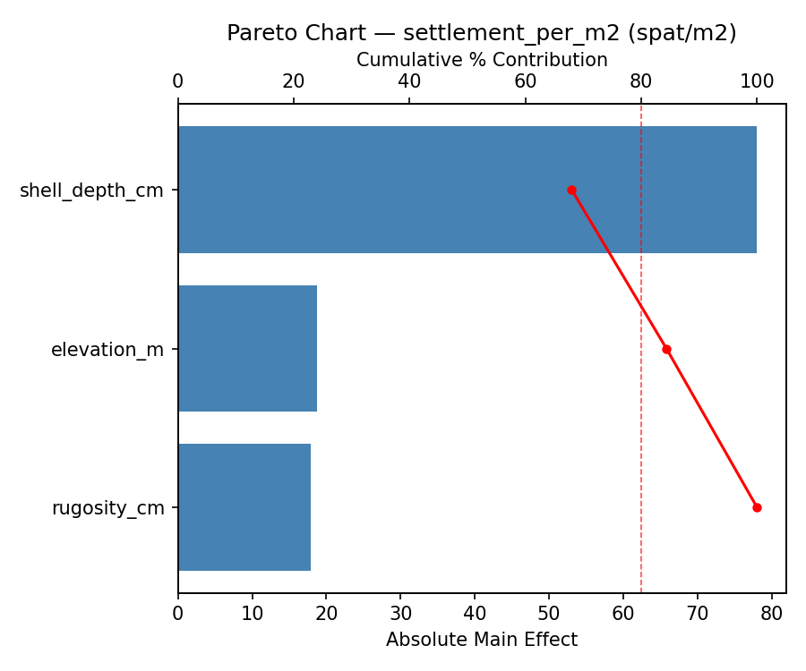
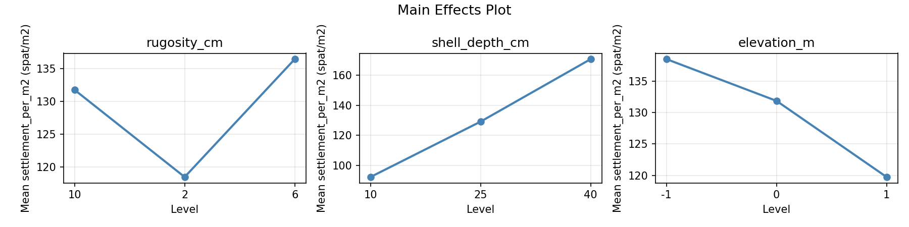
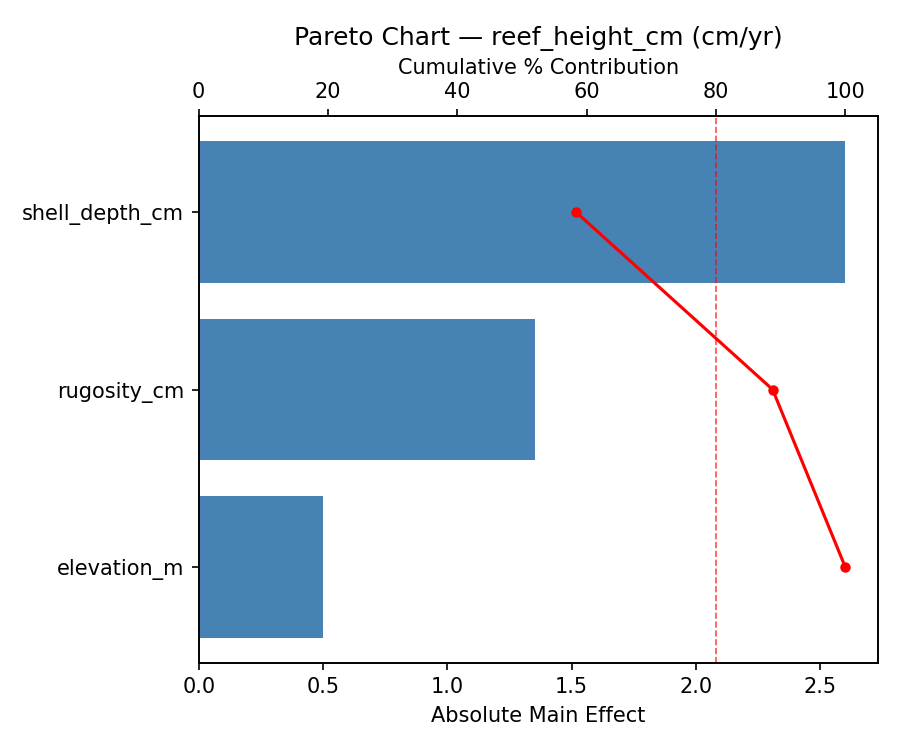
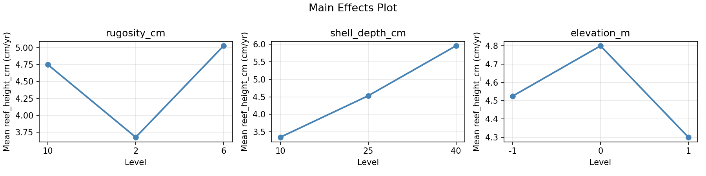
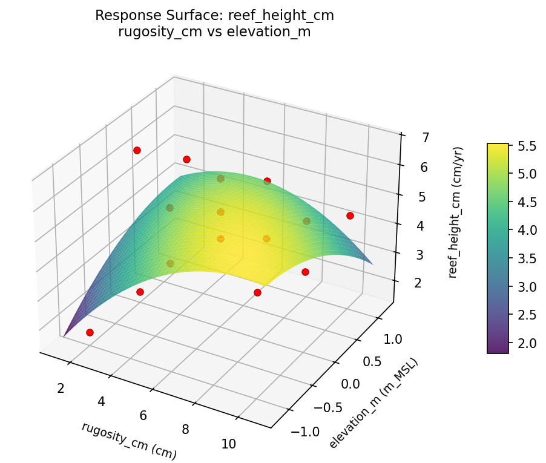
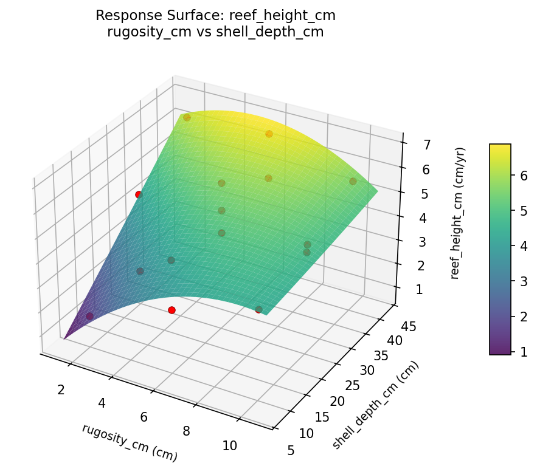
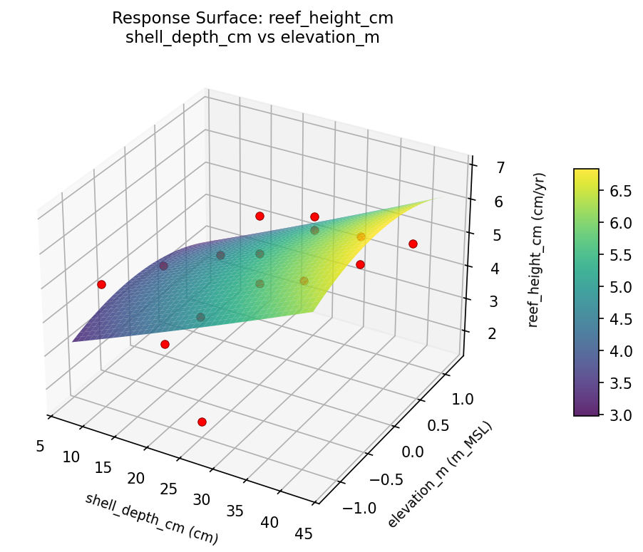
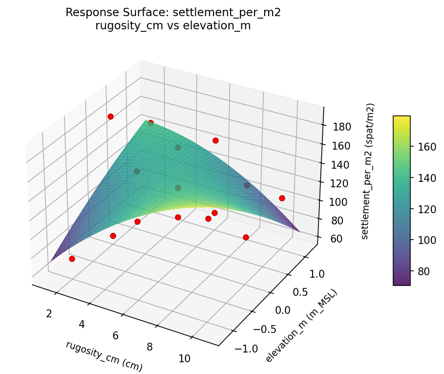
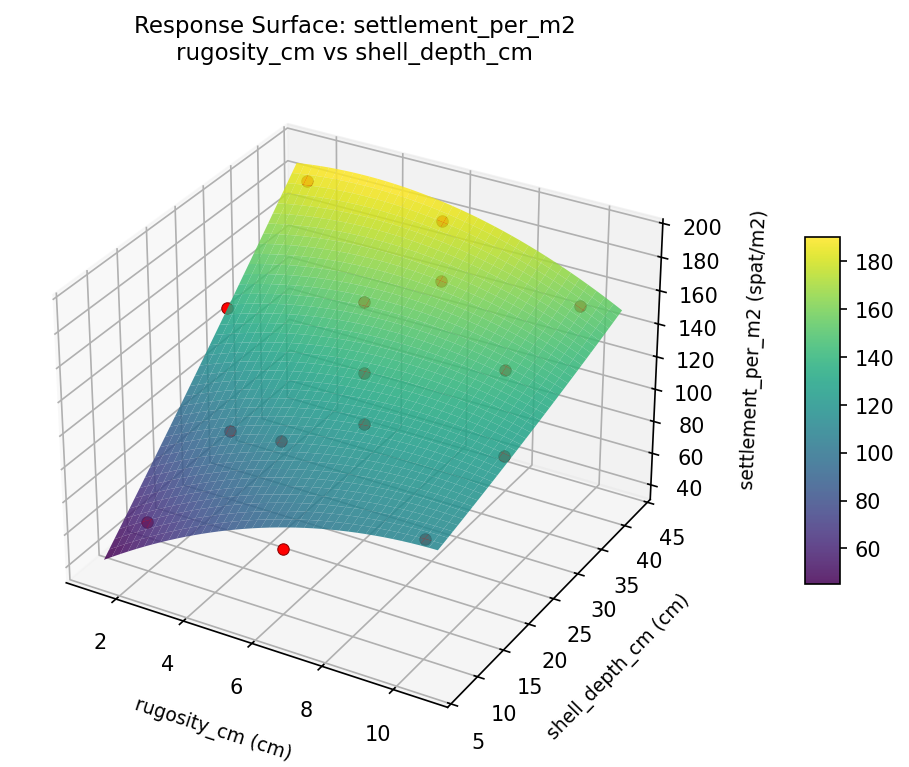
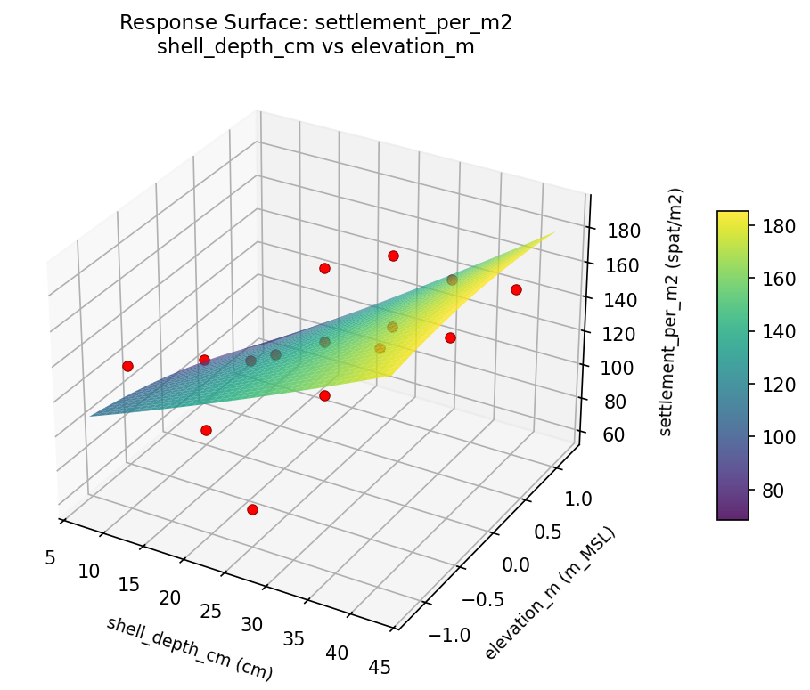

Experimental Setup
Factors
| Factor | Low | High | Unit |
|---|
rugosity_cm | 2 | 10 | cm |
shell_depth_cm | 10 | 40 | cm |
elevation_m | -1 | 1 | m_MSL |
Fixed: species = crassostrea_virginica, site = estuary_channel
Responses
| Response | Direction | Unit |
|---|
settlement_per_m2 | ↑ maximize | spat/m2 |
reef_height_cm | ↑ maximize | cm/yr |
Configuration
{
"metadata": {
"name": "Oyster Reef Substrate Design",
"description": "Box-Behnken design to maximize oyster settlement and reef height by tuning substrate rugosity, shell depth, and placement elevation"
},
"factors": [
{
"name": "rugosity_cm",
"levels": [
"2",
"10"
],
"type": "continuous",
"unit": "cm"
},
{
"name": "shell_depth_cm",
"levels": [
"10",
"40"
],
"type": "continuous",
"unit": "cm"
},
{
"name": "elevation_m",
"levels": [
"-1",
"1"
],
"type": "continuous",
"unit": "m_MSL"
}
],
"fixed_factors": {
"species": "crassostrea_virginica",
"site": "estuary_channel"
},
"responses": [
{
"name": "settlement_per_m2",
"optimize": "maximize",
"unit": "spat/m2"
},
{
"name": "reef_height_cm",
"optimize": "maximize",
"unit": "cm/yr"
}
],
"settings": {
"operation": "box_behnken",
"test_script": "use_cases/257_oyster_reef/sim.sh"
}
}
Experimental Matrix
The Box-Behnken Design produces 15 runs. Each row is one experiment with specific factor settings.
| Run | rugosity_cm | shell_depth_cm | elevation_m |
|---|
| 1 | 6 | 10 | -1 |
| 2 | 6 | 25 | 0 |
| 3 | 10 | 25 | 1 |
| 4 | 10 | 25 | -1 |
| 5 | 6 | 25 | 0 |
| 6 | 6 | 25 | 0 |
| 7 | 2 | 25 | 1 |
| 8 | 10 | 10 | 0 |
| 9 | 6 | 10 | 1 |
| 10 | 10 | 40 | 0 |
| 11 | 2 | 25 | -1 |
| 12 | 6 | 40 | 1 |
| 13 | 2 | 10 | 0 |
| 14 | 2 | 40 | 0 |
| 15 | 6 | 40 | -1 |
Step-by-Step Workflow
1
Preview the design
$ python doe.py info --config use_cases/257_oyster_reef/config.json
2
Generate the runner script
$ python doe.py generate --config use_cases/257_oyster_reef/config.json \
--output use_cases/257_oyster_reef/results/run.sh --seed 42
3
Execute the experiments
$ bash use_cases/257_oyster_reef/results/run.sh
4
Analyze results
$ python doe.py analyze --config use_cases/257_oyster_reef/config.json
5
Get optimization recommendations
$ python doe.py optimize --config use_cases/257_oyster_reef/config.json
6
Generate the HTML report
$ python doe.py report --config use_cases/257_oyster_reef/config.json \
--output use_cases/257_oyster_reef/results/report.html
Features Exercised
| Feature | Value |
|---|
| Design type | box_behnken |
| Factor types | continuous (all 3) |
| Arg style | double-dash |
| Responses | 2 (settlement_per_m2 ↑, reef_height_cm ↑) |
| Total runs | 15 |
Analysis Results
Generated from actual experiment runs using the DOE Helper Tool.
Response: settlement_per_m2
Top factors: shell_depth_cm (68.0%), elevation_m (16.4%), rugosity_cm (15.6%).
Pareto Chart

Main Effects Plot

Response: reef_height_cm
Top factors: shell_depth_cm (58.4%), rugosity_cm (30.4%), elevation_m (11.2%).
Pareto Chart

Main Effects Plot

Response Surface Plots
3D surfaces fitted with quadratic RSM. Red dots are observed data points.
reef height cm rugosity cm vs elevation m

reef height cm rugosity cm vs shell depth cm

reef height cm shell depth cm vs elevation m

settlement per m2 rugosity cm vs elevation m

settlement per m2 rugosity cm vs shell depth cm

settlement per m2 shell depth cm vs elevation m

Full Analysis Output
RSM surface: rsm_settlement_per_m2_rugosity_cm_vs_shell_depth_cm.png
RSM surface: rsm_settlement_per_m2_rugosity_cm_vs_elevation_m.png
RSM surface: rsm_settlement_per_m2_shell_depth_cm_vs_elevation_m.png
RSM surface: rsm_reef_height_cm_rugosity_cm_vs_shell_depth_cm.png
RSM surface: rsm_reef_height_cm_rugosity_cm_vs_elevation_m.png
RSM surface: rsm_reef_height_cm_shell_depth_cm_vs_elevation_m.png
=== Main Effects: settlement_per_m2 ===
Factor Effect Std Error % Contribution
--------------------------------------------------------------
shell_depth_cm 78.0000 10.7928 68.0%
elevation_m 18.7500 10.7928 16.4%
rugosity_cm 17.9286 10.7928 15.6%
=== Summary Statistics: settlement_per_m2 ===
rugosity_cm:
Level N Mean Std Min Max
------------------------------------------------------------
10 4 131.7500 30.3905 103.0000 159.0000
2 4 118.5000 61.2345 61.0000 189.0000
6 7 136.4286 40.0286 71.0000 186.0000
shell_depth_cm:
Level N Mean Std Min Max
------------------------------------------------------------
10 4 92.5000 33.5211 61.0000 135.0000
25 7 129.1429 35.8628 74.0000 176.0000
40 4 170.5000 19.8746 150.0000 189.0000
elevation_m:
Level N Mean Std Min Max
------------------------------------------------------------
-1 4 138.5000 47.7807 74.0000 186.0000
0 7 131.8571 45.7108 61.0000 189.0000
1 4 119.7500 38.0559 71.0000 150.0000
=== Main Effects: reef_height_cm ===
Factor Effect Std Error % Contribution
--------------------------------------------------------------
shell_depth_cm 2.6000 0.3997 58.4%
rugosity_cm 1.3536 0.3997 30.4%
elevation_m 0.5000 0.3997 11.2%
=== Summary Statistics: reef_height_cm ===
rugosity_cm:
Level N Mean Std Min Max
------------------------------------------------------------
10 4 4.7500 0.7141 4.0000 5.7000
2 4 3.6750 2.4281 1.6000 6.5000
6 7 5.0286 1.2606 2.9000 6.7000
shell_depth_cm:
Level N Mean Std Min Max
------------------------------------------------------------
10 4 3.3500 1.4248 1.6000 4.9000
25 7 4.5286 1.4056 1.7000 6.3000
40 4 5.9500 0.8226 4.9000 6.7000
elevation_m:
Level N Mean Std Min Max
------------------------------------------------------------
-1 4 4.5250 2.0759 1.7000 6.7000
0 7 4.8000 1.6951 1.6000 6.5000
1 4 4.3000 0.9522 2.9000 4.9000
Pareto chart (settlement_per_m2): use_cases/257_oyster_reef/results/analysis/pareto_settlement_per_m2.png
Pareto chart (reef_height_cm): use_cases/257_oyster_reef/results/analysis/pareto_reef_height_cm.png
Main effects (settlement_per_m2): use_cases/257_oyster_reef/results/analysis/main_effects_settlement_per_m2.png
Main effects (reef_height_cm): use_cases/257_oyster_reef/results/analysis/main_effects_reef_height_cm.png
Optimization Recommendations
=== Optimization: settlement_per_m2 ===
Direction: maximize
Best observed run: #10
rugosity_cm = 6
shell_depth_cm = 25
elevation_m = 0
Value: 189.0
RSM Model (linear, R² = 0.1496, Adj R² = -0.0824):
Coefficients:
intercept +130.4000
rugosity_cm -3.8750
shell_depth_cm -21.0000
elevation_m -1.1250
RSM Model (quadratic, R² = 0.7379, Adj R² = 0.2661):
Coefficients:
intercept +170.0000
rugosity_cm -3.8750
shell_depth_cm -21.0000
elevation_m -1.1250
rugosity_cm*shell_depth_cm +2.2500
rugosity_cm*elevation_m +36.0000
shell_depth_cm*elevation_m +8.2500
rugosity_cm^2 -46.0000
shell_depth_cm^2 -7.7500
elevation_m^2 -20.5000
Curvature analysis:
rugosity_cm coef=-46.0000 concave (has a maximum)
elevation_m coef=-20.5000 concave (has a maximum)
shell_depth_cm coef=-7.7500 concave (has a maximum)
Notable interactions:
rugosity_cm*elevation_m coef=+36.0000 (synergistic)
shell_depth_cm*elevation_m coef=+8.2500 (synergistic)
rugosity_cm*shell_depth_cm coef=+2.2500 (synergistic)
Predicted optimum (from quadratic model):
rugosity_cm = 6
shell_depth_cm = 10
elevation_m = -1
Predicted value: 172.1250
Model quality: Good fit — general trends are captured, some noise remains.
Factor importance:
1. rugosity_cm (effect: 47.9, contribution: 44.5%)
2. shell_depth_cm (effect: 42.0, contribution: 39.0%)
3. elevation_m (effect: 17.8, contribution: 16.5%)
=== Optimization: reef_height_cm ===
Direction: maximize
Best observed run: #15
rugosity_cm = 6
shell_depth_cm = 25
elevation_m = 0
Value: 6.7
RSM Model (linear, R² = 0.0794, Adj R² = -0.1717):
Coefficients:
intercept +4.5933
rugosity_cm -0.0625
shell_depth_cm -0.5375
elevation_m -0.2000
RSM Model (quadratic, R² = 0.8219, Adj R² = 0.5014):
Coefficients:
intercept +6.0333
rugosity_cm -0.0625
shell_depth_cm -0.5375
elevation_m -0.2000
rugosity_cm*shell_depth_cm +0.1500
rugosity_cm*elevation_m +1.8250
shell_depth_cm*elevation_m +0.1250
rugosity_cm^2 -1.4417
shell_depth_cm^2 -0.1417
elevation_m^2 -1.1167
Curvature analysis:
rugosity_cm coef=-1.4417 concave (has a maximum)
elevation_m coef=-1.1167 concave (has a maximum)
shell_depth_cm coef=-0.1417 concave (has a maximum)
Notable interactions:
rugosity_cm*elevation_m coef=+1.8250 (synergistic)
Predicted optimum (from quadratic model):
rugosity_cm = 6
shell_depth_cm = 25
elevation_m = 0
Predicted value: 6.0333
Model quality: Good fit — general trends are captured, some noise remains.
Factor importance:
1. rugosity_cm (effect: 1.4, contribution: 38.3%)
2. elevation_m (effect: 1.2, contribution: 32.6%)
3. shell_depth_cm (effect: 1.1, contribution: 29.1%)